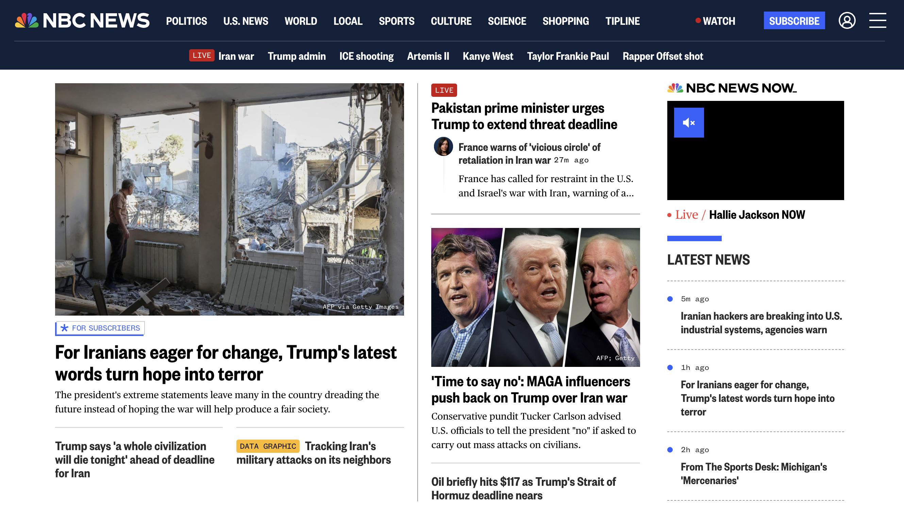

Case study
NBC News Homepage
Led a team to learn a new codebase and completely overhaul the look and feel of the NBC News homepage, successfully unifying the editorial workflow across mobile web and native apps.

The Challenge
The goal was to update the visual design of the NBC News homepage while we simultaneously adopted a completely new codebase. We had to ensure high performance and maintain high traffic reliability during the transition.
Editorial Efficiency
An underlying—and critical—problem we solved was editorial efficiency. Previously, the editorial team had to update one CMS to make changes on the web homepage, and then jump to a different CMS to make equivalent changes for the NBC News app.
Our project rebuilt the architecture to allow a single unified workflow, massively streamlining the editorial experience and reducing the time-to-publish for breaking news.
Component Consolidation
As part of the project, the team engineered a highly versatile core component whose presentation could be augmented in many different ways. This architectural shift significantly reduced the need for specialized variants, resulting in the deprecation and removal of many previously used bespoke components, vastly simplifying the application.
Cross-Platform Parity
By aligning the technical foundation, the project brought true feature and design parity across mobile web and native apps, ensuring a seamless experience for users regardless of how they accessed NBC News.